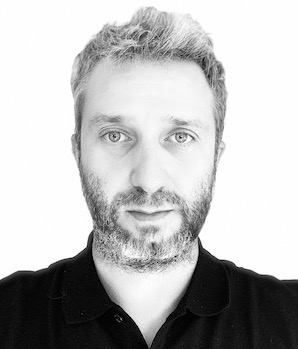

Since April 2025 I am an associate professor at the Politecnico di Milano.
My research is at the intersection of commutative algebra, algebraic geometry, and combinatorics.
I completed all of my undergraduate education in Bucharest, my hometown. In 2005, I moved to Genova, where I pursued my Ph.D. under the guidance of Aldo Conca. Later, I became a part of Elisa Gorla's SNSF research group in Switzerland, then I was a postdoc in Klaus Altmann's Algebraic Geometry group in Berlin. From June 2018 to March 2025 I was a guest professor at the same institue. For further details, please refer to my CV below.
Contact
alexandru.constantinescu "a" polimi.it
Tel: +39 02 2399 4505
Politecnico di Milano
Dipartimento di Matematica
Ed. 14 (Nave), ufficio 225
Via Edoardo Bonardi 9
20133 Milano
Italy
| Ricevimento: | solo su appuntamento via e-mail | |
| 2° semestre 2025/26 | nessun corso | |
| 1° semestre 2025/26 | Analisi e Geometria 1 | Geometria e Algebra Lineare |
|
 |
|||||||||||||
| ALEXANDRU CONSTANTINESCU | |||||||||||||
|
Born in 1981 in Bucharest
Romanian and German citizen Married, two daughters |
|||||||||||||
| Education | Italian Habilitation as Associate Professor for Algebra and Geometry (2023) | ||||||||||||
|
German Habilitation from the Freie Universität Berlin (2020)
Thesis: Hilbert Functions: a connection between algebra, geometry and combinatorics ( pdf ) |
|||||||||||||
|
Ph.D. in Mathematics from the University of Genova (2009) Advisor: Aldo Conca (Thesis pdf) |
|||||||||||||
|
Bachelor in Mathematics from the University of Bucharest (2004) Advisor: Paltin Ionescu |
|||||||||||||
| Employment | Politecnico di Milano |
associate professor |
since April 2025 |
||||||||||
| Freie Universität Berlin |
guest professor |
2019-2025 |
|||||||||||
| Freie Universität Berlin | BMS-substitute professor | 2018 | |||||||||||
| Università di Genova | INdAM-Marie Curie fellow | 2016-2018 | |||||||||||
| Freie Universität Berlin | postdoc | 2013-2016 | |||||||||||
| Univeristé de Neucâtel | postdoc | 2012-2013 | |||||||||||
| Universität Basel | postdoc | 2010-2012 | |||||||||||
| Università di Genova | assegnista di ricerca | 2009-2010 | |||||||||||
| Insitutul de Matematică al Academiei Române |
research assistant | since 2006, currently on leave | |||||||||||
| Publication record | 20 published papers, 2 in preparation. | ||||||||||||
| Some coauthors | Klaus Altmann, Bruno Benedetti, Giulio Caviglia, Emanuela DeNegri, Matej Filip, Elisa Gorla, Joachim Jelisiejew, Thomas Kahle, Patricia Klein, Nam Le Dinh, Matey Mateev, Matteo Varbaro | ||||||||||||
| Research interests |
Hilbert schemes of points deformation theory Gröbner bases Stanley-Reisner rings toric geometry free resolutions Castelnuovo-Mumford regularity arithmetic rank Hilbert functions algebras with straightening laws vertex cover algebras simplicial and polytopal complexes matroids h-vectors & f-vectors pure O-sequences Gorenstein liaison Lefschetz properties balanced simplicial complexes Coxeter groups |
Languages
|
|||||||||||